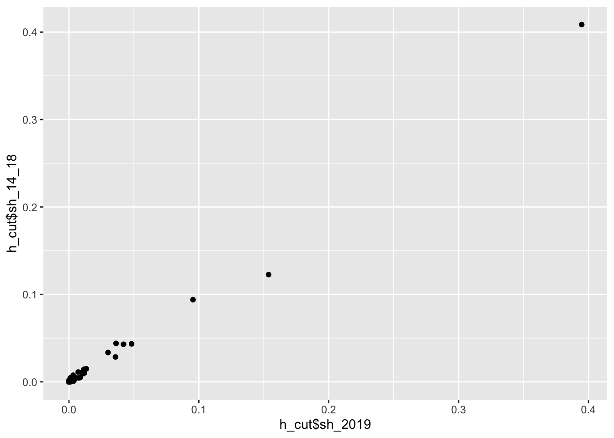
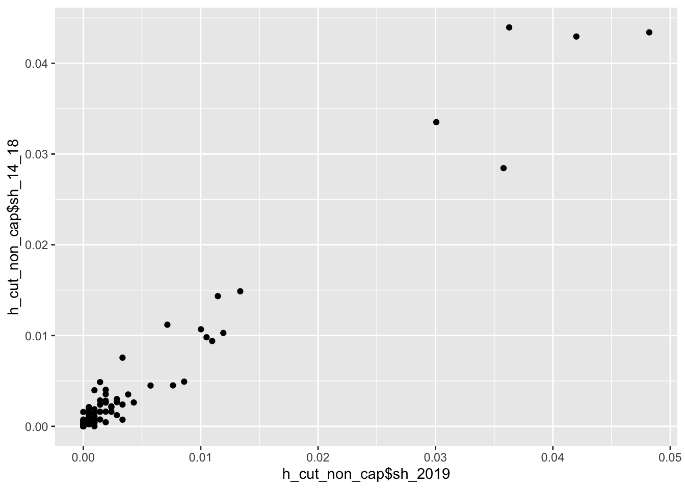
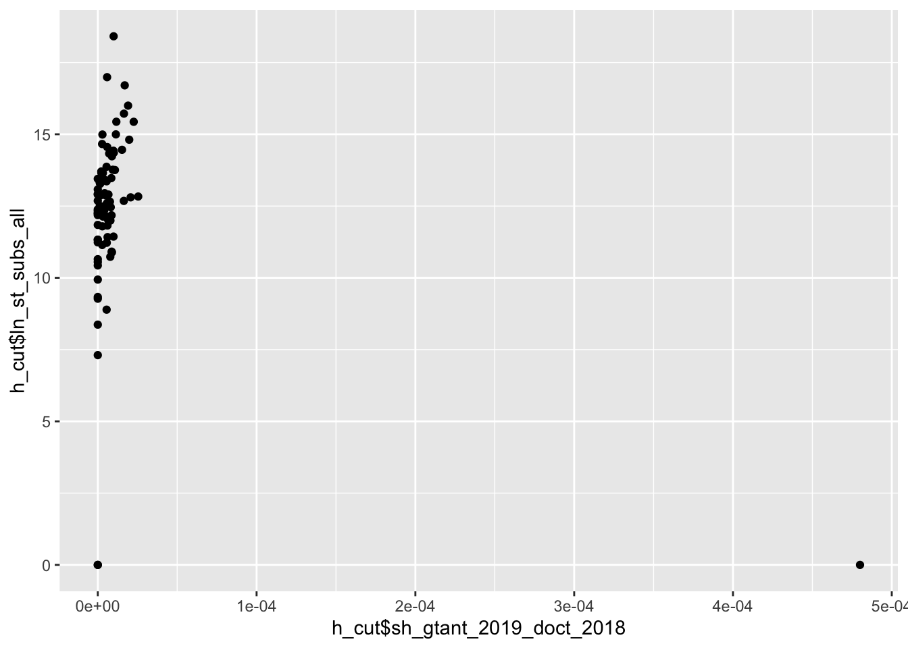
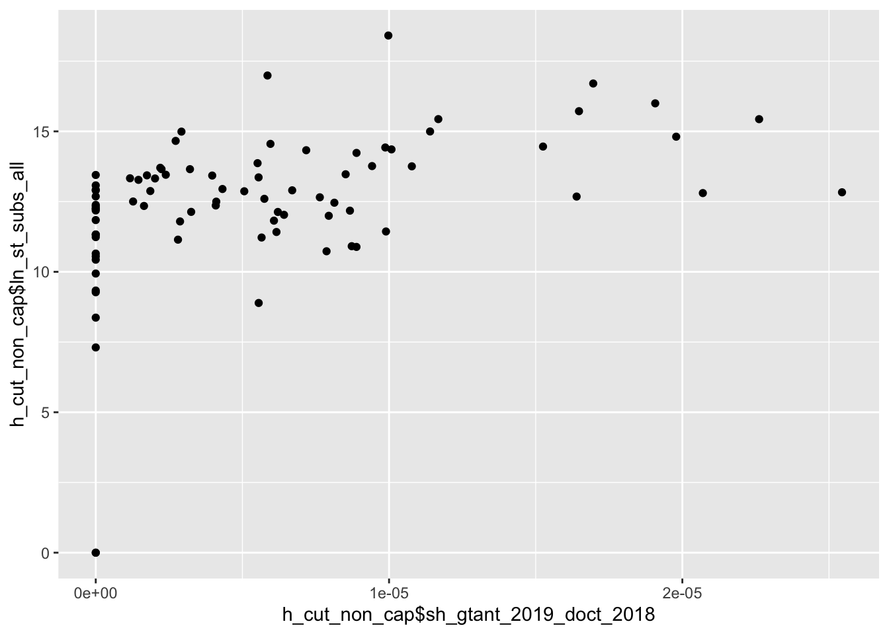

6 Модели
ПОМНИ о Чукотке и Еврейская АОб там не 0, там нет данных (примечание в росстате: засекречены WTF). Пока сделаем нули вместо NA
Модель 1
Будем отталкиваться от модели вида:
\[sh\_grants_{2019} = sh\_grants_{2014-2018} + \log(gov\_subs_{2018}) + sh\_doct_{2018}\] где,
\(sh\_grants_{2019}\) - доля грантов у региона в 2019
\(sh\_grants_{2014-2018}\) - доля грантов у региона в 2014-2018
\(\log(gov\_subs_{2018})\) - логарифм суммы четырех видов субсидий из госбюджета в 2018 (см. Переменные и гипотезы Н1)
\(sh\_doct_{2018}\) - доля докторов + кандидатов в регионе от общего числа по России в 2018
##
## Calls:
## model: lm(formula = sh_2019 ~ sh_14_18 + ln_st_subs_all + sh_sum_DOCT_CAND_2018,
## data = h_cut)
## model_2: lm(formula = sh_2019 ~ ln_st_subs_all + sh_sum_DOCT_CAND_2018,
## data = h_cut)
##
## =============================================
## model model_2
## ---------------------------------------------
## (Intercept) -0.00 -0.01
## (0.00) (0.01)
## sh_14_18 1.10***
## (0.05)
## ln_st_subs_all 0.00 0.00
## (0.00) (0.00)
## sh_sum_DOCT_CAND_2018 -0.12* 1.02***
## (0.05) (0.03)
## ---------------------------------------------
## R-squared 0.99 0.95
## N 85 85
## =============================================
## Significance: *** = p < 0.001;
## ** = p < 0.01; * = p < 0.05Диаграммы рассеяния
Доля грантов у региона в 2019 и доля грантов у региона в 2014-2018 связаны линейно. 
Уберем ТОП-3 всё еще связаны линейно. 
Точно такие же графики по связи доли грантов у региона в 2019 и доли докторов + кандидатов в регионе от общего числа по России в 2018
Модель 2
ПОМНИ ЧТО ДОКТОРА +1, ЧТОБЫ ЗНАМЕНАТЕЛЬ БЫЛ НЕ НУЛЕВОЙ
Нормируем на численность докторов + кандидатов регионе.
\[sh\_grants_{2019}/doct_{2018} = sh\_grants_{2014-2018} + \log(gov\_subs_{2018})\]
\[grants_{2019}/doct_{2018} = sh\_grants_{2014-2018} + \log(gov\_subs_{2018}) \]
где,
\(sh\_grants_{2019}\) - доля грантов у региона в 2019
\(sh\_grants_{2014-2018}\) - доля грантов у региона в 2014-2018
\(\log(gov\_subs_{2018})\) - логарифм суммы четырех видов субсидий из госбюджета в 2018 (см. Переменные и гипотезы Н1)
\(sh\_doct_{2018}\) - доля докторов + кандидатов в регионе от общего числа по России в 2018 (нет 2019, поэтому посмотрим пока 2018)
##
## Calls:
## model_3: lm(formula = sh_gtant_2019_doct_2018 ~ sh_14_18 + ln_st_subs_all,
## data = h_cut)
## model_4: lm(formula = gtant_2019_doct_2018 ~ sh_14_18 + ln_st_subs_all,
## data = h_cut)
##
## =================================================================
## model_3 model_4
## ------------------------ ---------------------
## sh_gtant_2019_doct_2018 gtant_2019_doct_2018
## -----------------------------------------------------------------
## (Intercept) 0.00*** 0.22***
## (0.00) (0.05)
## sh_14_18 0.00 0.39
## (0.00) (0.24)
## ln_st_subs_all -0.00*** -0.02***
## (0.00) (0.00)
## -----------------------------------------------------------------
## R-squared 0.19 0.19
## N 85 85
## =================================================================
## Significance: *** = p < 0.001; ** = p < 0.01; * = p < 0.05Диаграммы рассеяния для моделей 2
Доля грантов у региона в 2019 и доля грантов у региона в 2014-2018 связаны линейно. 
Ошибка с “Еврейская АОб”, она выкинута

Что попробовать дальше
Квантильная регрессия
Убоать топов
Убрать нулей
ПОПРАВИТЬ ДАШИН ДАТАСЕТ, ЧТОБЫ К РЕГИОНОМ ПРИКРЕПИЛОСЬ ✅